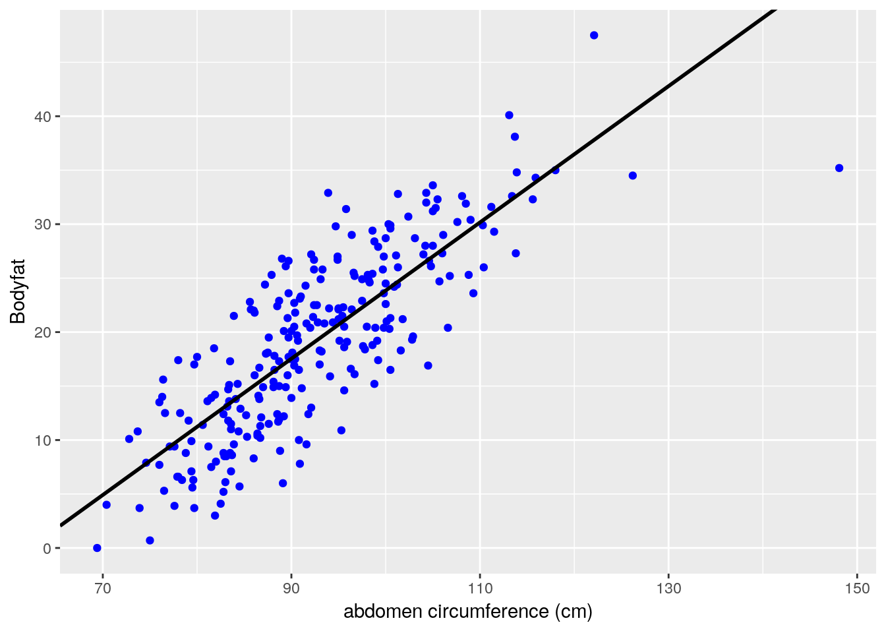
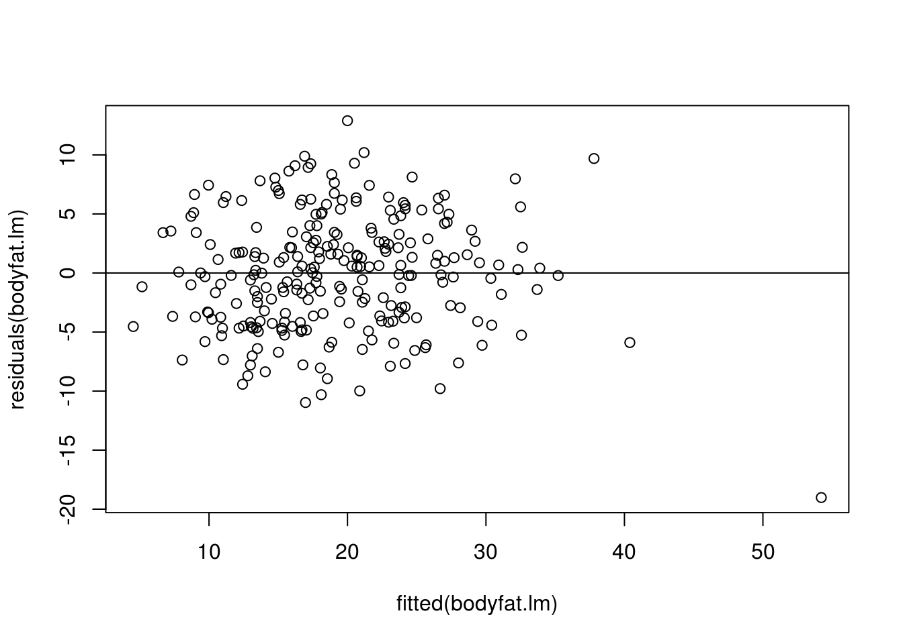
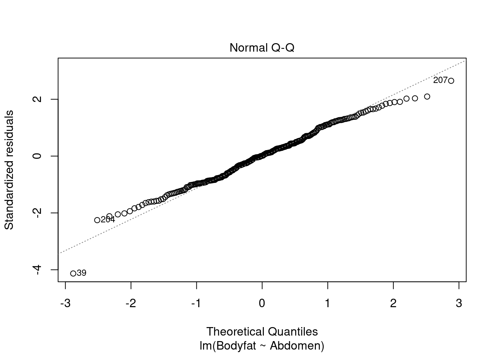
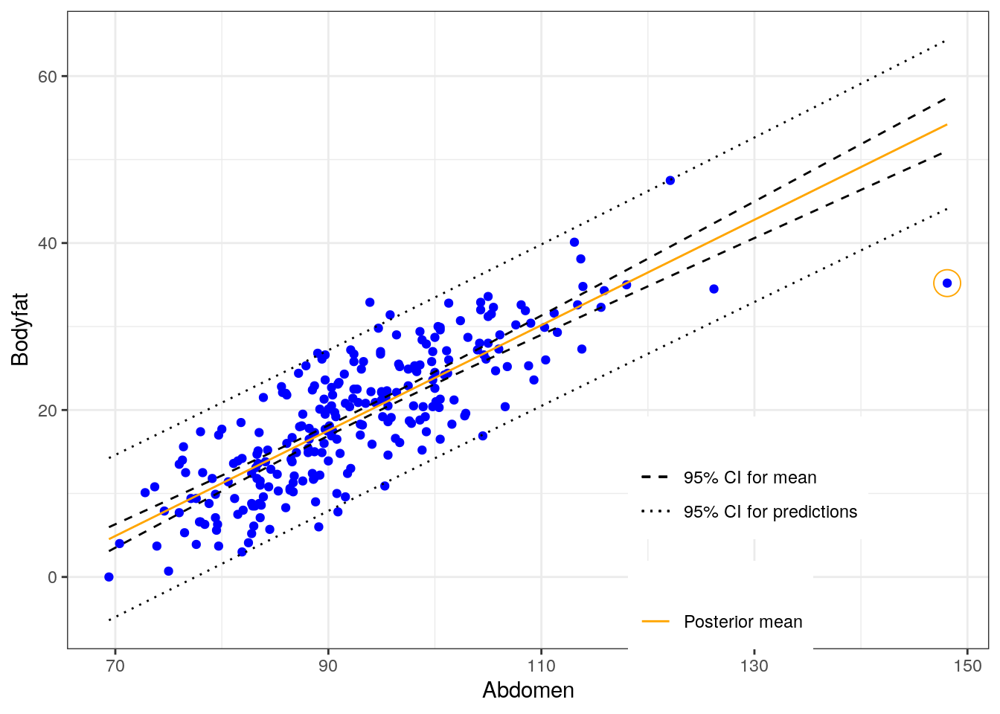
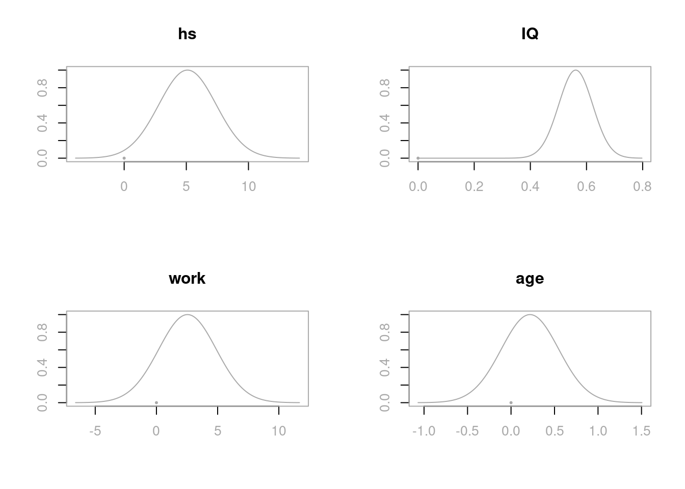

Chapter 6 Introduction to Bayesian Regression
In the previous chapter, we introduced Bayesian decision making using posterior probabilities and a variety of loss functions. We discussed how to minimize the expected loss for hypothesis testing. Moreover, we instroduced the concept of Bayes factors and gave some examples on how Bayes factors can be used in Bayesian hypothesis testing for comparison of two means. We also discussed how to choose appropriate and robust priors. When there is no conjugacy, we applied Markov Chain Monte Carlo simulation to approximate the posterior distributions of parameters of interest.
In this chapter, we will apply Bayesian inference methods to linear regression. We will first apply Bayesian statistics to simple linear regression models, then generalize the results to multiple linear regression models. We will see when using the reference prior, the posterior means, posterior standard deviations, and credible intervals of the coefficients coincide with the counterparts in the frequentist ordinary least square (OLS) linear regression models. However, using the Bayesian framework, we can now interpret credible intervals as the probabilities of the coefficients lying in such intervals.
6.1 Bayesian Simple Linear Regression
In this section, we will turn to Bayesian inference in simple linear regressions. We will use the reference prior distribution on coefficients, which will provide a connection between the frequentist solutions and Bayesian answers. This provides a baseline analysis for comparions with more informative prior distributions. To illustrate the ideas, we will use an example of predicting body fat.
6.1.1 Frequentist Ordinary Least Square (OLS) Simple Linear Regression
Obtaining accurate measurements of body fat is expensive and not easy to be done. Instead, predictive models that predict the percentage of body fat which use readily available measurements such as abdominal circumference are easy to use and inexpensive. We will apply a simple linear regression to predict body fat using abdominal circumference as an example to illustrate the Bayesian approach of linear regression. The data set bodyfat can be found from the library BAS.
To start, we load the BAS library (which can be downloaded from CRAN) to access the dataframe. We print out a summary of the variables in this dataframe.
## Density Bodyfat Age Weight
## Min. :0.995 Min. : 0.00 Min. :22.00 Min. :118.5
## 1st Qu.:1.041 1st Qu.:12.47 1st Qu.:35.75 1st Qu.:159.0
## Median :1.055 Median :19.20 Median :43.00 Median :176.5
## Mean :1.056 Mean :19.15 Mean :44.88 Mean :178.9
## 3rd Qu.:1.070 3rd Qu.:25.30 3rd Qu.:54.00 3rd Qu.:197.0
## Max. :1.109 Max. :47.50 Max. :81.00 Max. :363.1
## Height Neck Chest Abdomen
## Min. :29.50 Min. :31.10 Min. : 79.30 Min. : 69.40
## 1st Qu.:68.25 1st Qu.:36.40 1st Qu.: 94.35 1st Qu.: 84.58
## Median :70.00 Median :38.00 Median : 99.65 Median : 90.95
## Mean :70.15 Mean :37.99 Mean :100.82 Mean : 92.56
## 3rd Qu.:72.25 3rd Qu.:39.42 3rd Qu.:105.38 3rd Qu.: 99.33
## Max. :77.75 Max. :51.20 Max. :136.20 Max. :148.10
## Hip Thigh Knee Ankle Biceps
## Min. : 85.0 Min. :47.20 Min. :33.00 Min. :19.1 Min. :24.80
## 1st Qu.: 95.5 1st Qu.:56.00 1st Qu.:36.98 1st Qu.:22.0 1st Qu.:30.20
## Median : 99.3 Median :59.00 Median :38.50 Median :22.8 Median :32.05
## Mean : 99.9 Mean :59.41 Mean :38.59 Mean :23.1 Mean :32.27
## 3rd Qu.:103.5 3rd Qu.:62.35 3rd Qu.:39.92 3rd Qu.:24.0 3rd Qu.:34.33
## Max. :147.7 Max. :87.30 Max. :49.10 Max. :33.9 Max. :45.00
## Forearm Wrist
## Min. :21.00 Min. :15.80
## 1st Qu.:27.30 1st Qu.:17.60
## Median :28.70 Median :18.30
## Mean :28.66 Mean :18.23
## 3rd Qu.:30.00 3rd Qu.:18.80
## Max. :34.90 Max. :21.40This data frame includes 252 observations of men’s body fat and other measurements, such as waist circumference (Abdomen). We will construct a Bayesian model of simple linear regression, which uses Abdomen to predict the response variable Bodyfat. Let \(y_i,\ i=1,\cdots, 252\) denote the measurements of the response variable Bodyfat, and let \(x_i\) be the waist circumference measurements Abdomen. We regress Bodyfat on the predictor Abdomen. This regression model can be formulated as
\[ y_i = \alpha + \beta x_i + \epsilon_i, \quad i = 1,\cdots, 252.\]
Here, we assume error \(\epsilon_i\) is independent and identically distributed as normal random variables with mean zero and constant variance \(\sigma^2\):
\[ \epsilon_i \mathrel{\mathop{\sim}\limits^{\rm iid}}\textsf{Normal}(0, \sigma^2). \]
The figure below shows the percentage body fat obtained from under water weighing and the abdominal circumference measurements for 252 men. To predict body fat, the line overlayed on the scatter plot illustrates the best fitting ordinary least squares (OLS) line obtained with the lm function in R.
# Frequentist OLS linear regression
bodyfat.lm = lm(Bodyfat ~ Abdomen, data = bodyfat)
summary(bodyfat.lm)##
## Call:
## lm(formula = Bodyfat ~ Abdomen, data = bodyfat)
##
## Residuals:
## Min 1Q Median 3Q Max
## -19.0160 -3.7557 0.0554 3.4215 12.9007
##
## Coefficients:
## Estimate Std. Error t value Pr(>|t|)
## (Intercept) -39.28018 2.66034 -14.77 <2e-16 ***
## Abdomen 0.63130 0.02855 22.11 <2e-16 ***
## ---
## Signif. codes: 0 '***' 0.001 '**' 0.01 '*' 0.05 '.' 0.1 ' ' 1
##
## Residual standard error: 4.877 on 250 degrees of freedom
## Multiple R-squared: 0.6617, Adjusted R-squared: 0.6603
## F-statistic: 488.9 on 1 and 250 DF, p-value: < 2.2e-16# Extract coefficients
beta = coef(bodyfat.lm)
# Visualize regression line on the scatter plot
library(ggplot2)
ggplot(data = bodyfat, aes(x = Abdomen, y = Bodyfat)) +
geom_point(color = "blue") +
geom_abline(intercept = beta[1], slope = beta[2], size = 1) +
xlab("abdomen circumference (cm)") 
From the summary, we see that this model has an estimated slope, \(\hat{\beta}\), of 0.63 and an estimated \(y\)-intercept, \(\hat{\alpha}\), of about -39.28%. This gives us the prediction formula \[ \widehat{\text{Bodyfat}} = -39.28 + 0.63\times\text{Abdomen}. \] For every additional centimeter, we expect body fat to increase by 0.63%. The negative \(y\)-intercept of course does not make sense as a physical model, but neither does predicting a male with a waist of zero centimeter. Nevertheless, this linear regression may be an accurate approximation for prediction purpose for measurements that are in the observed range for this population.
Each of the residuals, which provide an estimate of the fitting error, is equal to \(\hat{\epsilon}_i = y_i - \hat{y}_i\), the difference between the observed value \(y_i\) and the fited value \(\hat{y}_i = \hat{\alpha} + \hat{\beta}x_i\), where \(x_i\) is the abdominal circumference for the \(i\)th male. \(\hat{\epsilon}_i\) is used for diagnostics as well as estimating the constant variance in the assumption of the model \(\sigma^2\) via the mean squared error (MSE):
\[ \hat{\sigma}^2 = \frac{1}{n-2}\sum_i^n (y_i-\hat{y}_i)^2 = \frac{1}{n-2}\sum_i^n \hat{\epsilon}_i^2. \]
Here the degrees of freedom \(n-2\) are the number of observations adjusted for the number of parameters (which is 2) that we estimated in the regression. The MSE, \(\hat{\sigma}^2\), may be calculated through squaring the residuals of the output of bodyfat.lm.
# Obtain residuals and n
resid = residuals(bodyfat.lm)
n = length(resid)
# Calculate MSE
MSE = 1/ (n - 2) * sum((resid ^ 2))
MSE## [1] 23.78985If this model is correct, the residuals and fitted values should be uncorrelated, and the expected value of the residuals is zero. We apply the scatterplot of residuals versus fitted values, which provides an additional visual check of the model adequacy.
# Combine residuals and fitted values into a data frame
result = data.frame(fitted_values = fitted.values(bodyfat.lm),
residuals = residuals(bodyfat.lm))
# Load library and plot residuals versus fitted values
library(ggplot2)
ggplot(data = result, aes(x = fitted_values, y = residuals)) +
geom_point(pch = 1, size = 2) +
geom_abline(intercept = 0, slope = 0) +
xlab(expression(paste("fitted value ", widehat(Bodyfat)))) +
ylab("residuals")
With the exception of one observation for the individual with the largest fitted value, the residual plot suggests that this linear regression is a reasonable approximation. The case number of the observation with the largest fitted value can be obtained using the which function in R. Further examination of the data frame shows that this case also has the largest waist measurement Abdomen. This may be our potential outlier and we will have more discussion on outlier in Section 6.2.
# Find the observation with the largest fitted value
which.max(as.vector(fitted.values(bodyfat.lm)))## [1] 39## [1] 39Furthermore, we can check the normal probability plot of the residuals for the assumption of normally distributed errors. We see that only Case 39, the one with the largest waist measurement, is exceptionally away from the normal quantile.

The confidence interval of \(\alpha\) and \(\beta\) can be constructed using the standard errors \(\text{se}_{\alpha}\) and \(\text{se}_{\beta}\) respectively. To proceed, we introduce notations of some “sums of squares” \[ \begin{aligned} \text{S}_{xx} = & \sum_i^n (x_i-\bar{x})^2\\ \text{S}_{yy} = & \sum_i^n (y_i-\bar{x})^2 \\ \text{S}_{xy} = & \sum_i^n (x_i-\bar{x})(y_i-\bar{y}) \\ \text{SSE} = & \sum_i^n (y_i-\hat{y}_i)^2 = \sum_i^n \hat{\epsilon}_i^2. \end{aligned} \]
The estimates of the \(y\)-intercept \(\alpha\), and the slope \(\beta\), which are denoted as \(\hat{\alpha}\) and \(\hat{\beta}\) respectively, can be calculated using these “sums of squares” \[ \hat{\beta} = \frac{\sum_i (x_i-\bar{x})(y_i-\bar{y})}{\sum_i (x_i-\bar{x})^2} = \frac{\text{S}_{xy}}{\text{S}_{xx}},\qquad \qquad \hat{\alpha} = \bar{y} - \hat{\beta}\bar{x} = \bar{y}-\frac{\text{S}_{xy}}{\text{S}_{xx}}\bar{x}. \]
The last “sum of square” is the sum of squares of errors (SSE). Its sample mean is exactly the mean squared error (MSE) we introduced previously \[ \hat{\sigma}^2 = \frac{\text{SSE}}{n-2} = \text{MSE}. \]
The standard errors, \(\text{se}_{\alpha}\) and \(\text{se}_{\beta}\), are given as \[ \begin{aligned} \text{se}_{\alpha} = & \sqrt{\frac{\text{SSE}}{n-2}\left(\frac{1}{n}+\frac{\bar{x}^2}{\text{S}_{xx}}\right)} = \hat{\sigma}\sqrt{\frac{1}{n}+\frac{\bar{x}^2}{\text{S}_{xx}}},\\ \text{se}_{\beta} = & \sqrt{\frac{\text{SSE}}{n-2}\frac{1}{\text{S}_{xx}}} = \frac{\hat{\sigma}}{\sqrt{\text{S}_{xx}}}. \end{aligned} \]
We may construct the confidence intervals of \(\alpha\) and \(\beta\) using the \(t\)-statistics \[ t_\alpha^\ast = \frac{\alpha - \hat{\alpha}}{\text{se}_{\alpha}},\qquad \qquad t_\beta^\ast = \frac{\beta-\hat{\beta}}{\text{se}_{\beta}}. \]
They both have degrees of freedom \(n-2\).
6.1.2 Bayesian Simple Linear Regression Using the Reference Prior
Let us now turn to the Bayesian version and show that under the reference prior, we will obtain the posterior distributions of \(\alpha\) and \(\beta\) analogous with the frequentist OLS results.
The Bayesian model starts with the same model as the classical frequentist approach: \[ y_i = \alpha + \beta x_i + \epsilon_i,\quad i = 1,\cdots, n. \] with the assumption that the errors, \(\epsilon_i\), are independent and identically distributed as normal random variables with mean zero and constant variance \(\sigma^2\). This assumption is exactly the same as in the classical inference case for testing and constructing confidence intervals for \(\alpha\) and \(\beta\).
Our goal is to update the distributions of the unknown parameters \(\alpha\), \(\beta\), and \(\sigma^2\), based on the data \(x_1, y_1, \cdots, x_n, y_n\), where \(n\) is the number of observations.
Under the assumption that the errors \(\epsilon_i\) are normally distributed with constant variance \(\sigma^2\), we have for the random variable of each response \(Y_i\), conditioning on the observed data \(x_i\) and the parameters \(\alpha,\ \beta,\ \sigma^2\), is normally distributed: \[ Y_i~|~x_i, \alpha, \beta,\sigma^2~ \sim~ \textsf{Normal}(\alpha + \beta x_i, \sigma^2),\qquad i = 1,\cdots, n. \]
That is, the likelihood of each \(Y_i\) given \(x_i, \alpha, \beta\), and \(\sigma^2\) is given by \[ p(y_i~|~x_i, \alpha, \beta, \sigma^2) = \frac{1}{\sqrt{2\pi\sigma^2}}\exp\left(-\frac{(y_i-(\alpha+\beta x_i))^2}{2\sigma^2}\right). \]
The likelihood of \(Y_1,\cdots,Y_n\) is the product of each likelihood \(p(y_i~|~x_i, \alpha, \beta,\sigma^2)\), since we assume each response \(Y_i\) is independent from each other. Since this likelihood depends on the values of \(\alpha\), \(\beta\), and \(\sigma^2\), it is sometimes denoted as a function of \(\alpha\), \(\beta\), and \(\sigma^2\): \(\mathcal{L}(\alpha, \beta, \sigma^2)\).
We first consider the case under the reference prior, which is our standard noninformative prior. Using the reference prior, we will obtain familiar distributions as the posterior distributions of \(\alpha\), \(\beta\), and \(\sigma^2\), which gives the analogue to the frequentist results. Here we assume the joint prior distribution of \(\alpha,\ \beta\), and \(\sigma^2\) to be proportional to the inverse of \(\sigma^2\)
\[\begin{equation} p(\alpha, \beta, \sigma^2)\propto \frac{1}{\sigma^2}. \tag{6.1} \end{equation}\]
Using the hierachical model framework, this is equivalent to assuming that the joint prior distribution of \(\alpha\) and \(\beta\) under \(\sigma^2\) is the uniform prior, while the prior distribution of \(\sigma^2\) is proportional to \(\displaystyle \frac{1}{\sigma^2}\). That is \[ p(\alpha, \beta~|~\sigma^2) \propto 1, \qquad\qquad p(\sigma^2) \propto \frac{1}{\sigma^2}, \] Combining the two using conditional probability, we will get the same joint prior distribution (6.1).
Then we apply the Bayes’ rule to derive the joint posterior distribution after observing data \(y_1,\cdots, y_n\). Bayes’ rule states that the joint posterior distribution of \(\alpha\), \(\beta\), and \(\sigma^2\) is proportional to the product of the likelihood and the joint prior distribution: \[ \begin{aligned} p^*(\alpha, \beta, \sigma^2~|~y_1,\cdots,y_n) \propto & \left[\prod_i^n p(y_i~|~x_i,\alpha,\beta,\sigma^2)\right]p(\alpha, \beta,\sigma^2) \\ \propto & \left[\left(\frac{1}{(\sigma^2)^{1/2}}\exp\left(-\frac{(y_1-(\alpha+\beta x_1 ))^2}{2\sigma^2}\right)\right)\times\cdots \right.\\ & \left. \times \left(\frac{1}{(\sigma^2)^{1/2}}\exp\left(-\frac{(y_n-(\alpha +\beta x_n))^2}{2\sigma^2}\right)\right)\right]\times\left(\frac{1}{\sigma^2}\right)\\ \propto & \frac{1}{(\sigma^2)^{(n+2)/2}}\exp\left(-\frac{\sum_i\left(y_i-\alpha-\beta x_i\right)^2}{2\sigma^2}\right) \end{aligned} \]
To obtain the marginal posterior distribution of \(\beta\), we need to integrate \(\alpha\) and \(\sigma^2\) out from the joint posterior distribution \[ p^*(\beta~|~y_1,\cdots,y_n) = \int_0^\infty \left(\int_{-\infty}^\infty p^*(\alpha, \beta, \sigma^2~|~y_1,\cdots, y_n)\, d\alpha\right)\, d\sigma^2. \]
We leave the detailed calculation in Section 6.1.4. It can be shown that the marginal posterior distribution of \(\beta\) is the Student’s \(t\)-distribution \[ \beta~|~y_1,\cdots,y_n ~\sim~ \textsf{t}\left(n-2,\ \hat{\beta},\ \frac{\hat{\sigma}^2}{\text{S}_{xx}}\right) = \textsf{t}\left(n-2,\ \hat{\beta},\ (\text{se}_{\beta})^2\right), \] with degrees of freedom \(n-2\), center at \(\hat{\beta}\), the slope estimate we obtained from the frequentist OLS model, and scale parameter \(\displaystyle \frac{\hat{\sigma}^2}{\text{S}_{xx}}=\left(\text{se}_{\beta}\right)^2\), which is the square of the standard error of \(\hat{\beta}\) under the frequentist OLS model.
Similarly, we can integrate out \(\beta\) and \(\sigma^2\) from the joint posterior distribution to get the marginal posterior distribution of \(\alpha\), \(p^*(\alpha~|~y_1,\cdots, y_n)\). It turns out that \(p^*(\alpha~|~y_1,\cdots,y_n)\) is again a Student’s \(t\)-distribution with degrees of freedom \(n-2\), center at \(\hat{\alpha}\), the \(y\)-intercept estimate from the frequentist OLS model, and scale parameter \(\displaystyle \hat{\sigma}^2\left(\frac{1}{n}+\frac{\bar{x}^2}{\text{S}_{xx}}\right) = \left(\text{se}_{\alpha}\right)^2\), which is the square of the standard error of \(\hat{\alpha}\) under the frequentist OLS model \[ \alpha~|~y_1,\cdots,y_n~\sim~ \textsf{t}\left(n-2,\ \hat{\alpha},\ \hat{\sigma}^2\left(\frac{1}{n}+\frac{\bar{x}^2}{\text{S}_{xx}}\right)\right) = \textsf{t}\left(n-2,\ \hat{\alpha},\ (\text{se}_{\alpha})^2\right).\]
Finally, we can show that the marginal posterior distribution of \(\sigma^2\) is the inverse Gamma distribution, or equivalently, the reciprocal of \(\sigma^2\), which is the precision \(\phi\), follows the Gamme distribution \[ \phi = \frac{1}{\sigma^2}~|~y_1,\cdots,y_n \sim \textsf{Gamma}\left(\frac{n-2}{2}, \frac{\text{SSE}}{2}\right). \]
Moreover, similar to the Normal-Gamma conjugacy under the reference prior introduced in the previous chapters, the joint posterior distribution of \(\beta, \sigma^2\), and the joint posterior distribution of \(\alpha, \sigma^2\) are both Normal-Gamma. In particular, the posterior distribution of \(\beta\) conditioning on \(\sigma^2\) is \[ \beta~|~\sigma^2, \text{data}~\sim ~\textsf{Normal}\left(\hat{\beta}, \frac{\sigma^2}{\text{S}_{xx}}\right), \]
and the posterior distribution of \(\alpha\) conditioning on \(\sigma^2\) is \[ \alpha~|~\sigma^2, \text{data}~\sim ~\textsf{Normal}\left(\hat{\alpha}, \sigma^2\left(\frac{1}{n}+\frac{\bar{x}^2}{\text{S}_{xx}}\right)\right).\]
Credible Intervals for Slope \(\beta\) and \(y\)-Intercept \(\alpha\)
The Bayesian posterior distribution results of \(\alpha\) and \(\beta\) show that under the reference prior, the posterior credible intervals are in fact numerically equivalent to the confidence intervals from the classical frequentist OLS analysis. This provides a baseline analysis for other Bayesian analyses with other informative prior distributions or perhaps other “objective” prior distributions, such as the Cauchy distribution. (Cauchy distribution is the Student’s \(t\) prior with 1 degree of freedom.)
Since the credible intervals are numerically the same as the confidence intervals, We can use the lm function to obtain the OLS estimates and construct the credible intervals of \(\alpha\) and \(\beta\)
## Estimate Std. Error
## (Intercept) -39.2801847 2.66033696
## Abdomen 0.6313044 0.02855067The columns labeled Estimate and Std. Error are equivalent to the centers (or posterior means) and scale parameters (or standard deviations) in the two Student’s \(t\)-distributions respectively. The credible intervals of \(\alpha\) and \(\beta\) are the same as the frequentist confidence intervals, but now we can interpret them from the Bayesian perspective.
The confint function provides 95% confidence intervals. Under the reference prior, they are equivalent to the 95% credible intervals. The code below extracts them and relabels the output as the Bayesian results.
out = cbind(output, confint(bodyfat.lm))
colnames(out) = c("posterior mean", "posterior std", "2.5", "97.5")
round(out, 2)## posterior mean posterior std 2.5 97.5
## (Intercept) -39.28 2.66 -44.52 -34.04
## Abdomen 0.63 0.03 0.58 0.69These intervals coincide with the confidence intervals from the frequentist approach. The primary difference is the interpretation. For example, based on the data, we believe that there is 95% chance that body fat will increase by 5.75% up to 6.88% for every additional 10 centimeter increase in the waist circumference.
Credible Intervals for the Mean \(\mu_Y\) and the Prediction \(y_{n+1}\)
From our assumption of the model \[ y_i = \alpha + \beta x_i + \epsilon_i, \] the mean of the response variable \(Y\), \(\mu_Y\), at the point \(x_i\) is \[ \mu_Y~|~x_i = E[Y~|~x_i] = \alpha + \beta x_i. \]
Under the reference prior, \(\mu_Y\) has a posterior distributuion \[ \alpha + \beta x_i ~|~ \text{data} \sim \textsf{t}(n-2,\ \hat{\alpha} + \hat{\beta} x_i,\ \text{S}_{Y|X_i}^2), \] where \[ \text{S}_{Y|X_i}^2 = \hat{\sigma}^2\left(\frac{1}{n}+\frac{(x_i-\bar{x})^2}{\text{S}_{xx}}\right) \]
Any new prediction \(y_{n+1}\) at a point \(x_{n+1}\) also follows the Student’s \(t\)-distribution \[ y_{n+1}~|~\text{data}, x_{n+1}\ \sim \textsf{t}\left(n-2,\ \hat{\alpha}+\hat{\beta} x_{n+1},\ \text{S}_{Y|X_{n+1}}^2\right), \]
where \[ \text{S}_{Y|X_{n+1}}^2 =\hat{\sigma}^2+\hat{\sigma}^2\left(\frac{1}{n}+\frac{(x_{n+1}-\bar{x})^2}{\text{S}_{xx}}\right) = \hat{\sigma}^2\left(1+\frac{1}{n}+\frac{(x_{n+1}-\bar{x})^2}{\text{S}_{xx}}\right). \]
The variance for predicting a new observation \(y_{n+1}\) has an extra \(\hat{\sigma}^2\) which comes from the uncertainty of a new observation about the mean \(\mu_Y\) estimated by the regression line.
We can extract these intervals using the predict function
library(ggplot2)
# Construct current prediction
alpha = bodyfat.lm$coefficients[1]
beta = bodyfat.lm$coefficients[2]
new_x = seq(min(bodyfat$Abdomen), max(bodyfat$Abdomen),
length.out = 100)
y_hat = alpha + beta * new_x
# Get lower and upper bounds for mean
ymean = data.frame(predict(bodyfat.lm,
newdata = data.frame(Abdomen = new_x),
interval = "confidence",
level = 0.95))
# Get lower and upper bounds for prediction
ypred = data.frame(predict(bodyfat.lm,
newdata = data.frame(Abdomen = new_x),
interval = "prediction",
level = 0.95))
output = data.frame(x = new_x, y_hat = y_hat, ymean_lwr = ymean$lwr, ymean_upr = ymean$upr,
ypred_lwr = ypred$lwr, ypred_upr = ypred$upr)
# Extract potential outlier data point
outlier = data.frame(x = bodyfat$Abdomen[39], y = bodyfat$Bodyfat[39])
# Scatter plot of original
plot1 = ggplot(data = bodyfat, aes(x = Abdomen, y = Bodyfat)) + geom_point(color = "blue")
# Add bounds of mean and prediction
plot2 = plot1 +
geom_line(data = output, aes(x = new_x, y = y_hat, color = "first"), lty = 1) +
geom_line(data = output, aes(x = new_x, y = ymean_lwr, lty = "second")) +
geom_line(data = output, aes(x = new_x, y = ymean_upr, lty = "second")) +
geom_line(data = output, aes(x = new_x, y = ypred_upr, lty = "third")) +
geom_line(data = output, aes(x = new_x, y = ypred_lwr, lty = "third")) +
scale_colour_manual(values = c("orange"), labels = "Posterior mean", name = "") +
scale_linetype_manual(values = c(2, 3), labels = c("95% CI for mean", "95% CI for predictions")
, name = "") +
theme_bw() +
theme(legend.position = c(1, 0), legend.justification = c(1.5, 0))
# Identify potential outlier
plot2 + geom_point(data = outlier, aes(x = x, y = y), color = "orange", pch = 1, cex = 6)
Note in the above plot, the legend “CI” can mean either confidence interval or credible interval. The difference comes down to the interpretation. For example, the prediction at the same abdominal circumference as in Case 39 is
pred.39 = predict(bodyfat.lm, newdata = bodyfat[39, ], interval = "prediction", level = 0.95)
out = cbind(bodyfat[39,]$Abdomen, pred.39)
colnames(out) = c("abdomen", "prediction", "lower", "upper")
out## abdomen prediction lower upper
## 39 148.1 54.21599 44.0967 64.33528Based on the data, a Bayesian would expect that a man with waist circumference of 148.1 centermeters should have bodyfat of 54.216% with 95% chance thta it is between 44.097% and 64.335%.
While we expect the majority of the data will be within the prediction intervals (the short dashed grey lines), Case 39 seems to be well below the interval. We next use Bayesian methods in Section 6.2 to calculate the probability that this case is abnormal or is an outlier by falling more than \(k\) standard deviations from either side of the mean.
6.1.3 Informative Priors
Except from the noninformative reference prior, we may also consider using a more general semi-conjugate prior distribution of \(\alpha\), \(\beta\), and \(\sigma^2\) when there is information available about the parameters.
Since the data \(y_1,\cdots,y_n\) are normally distributed, from Chapter 3 we see that a Normal-Gamma distribution will form a conjugacy in this situation. We then set up prior distributions through a hierarchical model. We first assume that, given \(\sigma^2\), \(\alpha\) and \(\beta\) together follow the bivariate normal prior distribution, from which their marginal distributions are both normal, \[ \begin{aligned} \alpha~|~\sigma^2 \sim & \textsf{Normal}(a_0, \sigma^2\text{S}_\alpha) \\ \beta ~|~ \sigma^2 \sim & \textsf{Normal}(b_0, \sigma^2\text{S}_\beta), \end{aligned} \] with covariance \[ \text{Cov}(\alpha, \beta ~|~\sigma^2) =\sigma^2 \text{S}_{\alpha\beta}. \]
Here, \(\sigma^2\), \(S_\alpha\), \(S_\beta\), and \(S_{\alpha\beta}\) are hyperparameters. This is equivalent to setting the coefficient vector \(\boldsymbol{\beta}= (\alpha, \beta)^T\)1 to have a bivariate normal distribution with convariance matrix \(\Sigma_0\) \[ \Sigma_0 = \sigma^2\left(\begin{array}{cc} S_\alpha & S_{\alpha\beta} \\ S_{\alpha\beta} & S_\beta \end{array} \right). \] That is, \[ \boldsymbol{\beta}= (\alpha, \beta)^T ~|~\sigma^2 \sim \textsf{BivariateNormal}(\mathbf{b} = (a_0, b_0)^T, \sigma^2\Sigma_0). \]
Then for \(\sigma^2\), we will impose an inverse Gamma distribution as its prior distribution \[ 1/\sigma^2 \sim \textsf{Gamma}\left(\frac{\nu_0}{2}, \frac{\nu_0\sigma_0}{2}\right). \]
Now the join prior distribution of \(\alpha, \beta\), and \(\sigma^2\) form a distribution that is analogous to the Normal-Gamma distribution. Prior information about \(\alpha\), \(\beta\), and \(\sigma^2\) are encoded in the hyperparameters \(a_0\), \(b_0\), \(\text{S}_\alpha\), \(\text{S}_\beta\), \(\text{S}_{\alpha\beta}\), \(\nu_0\), and \(\sigma_0\).
The marginal posterior distribution of the coefficient vector \(\boldsymbol{\beta}= (\alpha, \beta)\) will be bivariate normal, and the marginal posterior distribution of \(\sigma^2\) is again an inverse Gamma distribution \[ 1/\sigma^2~|~y_1,\cdots,y_n \sim \textsf{Gamma}\left(\frac{\nu_0+n}{2}, \frac{\nu_0\sigma_0^2+\text{SSE}}{2}\right). \]
One can see that the reference prior is the limiting case of this conjugate prior we impose. We usually use Gibbs sampling to approximate the joint posterior distribution instead of using the result directly, especially when we have more regression coefficients in multiple linear regression models. We omit the deviations of the posterior distributions due to the heavy use of advanced linear algebra. One can refer to Hoff (2009) for more details.
Based on any prior information we have for the model, we can also impose other priors and assumptions on \(\alpha\), \(\beta\), and \(\sigma^2\) to get different Bayesian results. Most of these priors will not form any conjugacy and will require us to use simulation methods such as Markov Chain Monte Carlo (MCMC) for approximations. We will introduce the general idea of MCMC in Chapter 8.
6.1.4 (Optional) Derivations of Marginal Posterior Distributions of \(\alpha\), \(\beta\), \(\sigma^2\)
In this section, we will use the notations we introduced earlier such as \(\text{SSE}\), the sum of squares of errors, \(\hat{\sigma}^2\), the mean squared error, \(\text{S}_{xx}\), \(\text{se}_{\alpha}\), \(\text{se}_{\beta}\) and so on to simplify our calculations.
We will also use the following quantities derived from the formula of \(\bar{x}\), \(\bar{y}\), \(\hat{\alpha}\), and \(\hat{\beta}\) \[ \begin{aligned} & \sum_i^n (x_i-\bar{x}) = 0 \\ & \sum_i^n (y_i-\bar{y}) = 0 \\ & \sum_i^n (y_i - \hat{y}_i) = \sum_i^n (y_i - (\hat{\alpha} + \hat{\beta} x_i)) = 0\\ & \sum_i^n (x_i-\bar{x})(y_i - \hat{y}_i) = \sum_i^n (x_i-\bar{x})(y_i-\bar{y}-\hat{\beta}(x_i-\bar{x})) = \sum_i^n (x_i-\bar{x})(y_i-\bar{y})-\hat{\beta}\sum_i^n(x_i-\bar{x})^2 = 0\\ & \sum_i^n x_i^2 = \sum_i^n (x_i-\bar{x})^2 + n\bar{x}^2 = \text{S}_{xx}+n\bar{x}^2 \end{aligned} \]
We first further simplify the numerator inside the exponential function in the formula of \(p^*(\alpha, \beta, \sigma^2~|~y_1,\cdots,y_n)\): \[ \begin{aligned} & \sum_i^n \left(y_i - \alpha - \beta x_i\right)^2 \\ = & \sum_i^n \left(y_i - \hat{\alpha} - \hat{\beta}x_i - (\alpha - \hat{\alpha}) - (\beta - \hat{\beta})x_i\right)^2 \\ = & \sum_i^n \left(y_i - \hat{\alpha} - \hat{\beta}x_i\right)^2 + \sum_i^n (\alpha - \hat{\alpha})^2 + \sum_i^n (\beta-\hat{\beta})^2(x_i)^2 \\ & - 2\sum_i^n (\alpha - \hat{\alpha})(y_i-\hat{\alpha}-\hat{\beta}x_i) - 2\sum_i^n (\beta-\hat{\beta})(x_i)(y_i-\hat{\alpha}-\hat{\beta}x_i) + 2\sum_i^n(\alpha - \hat{\alpha})(\beta-\hat{\beta})(x_i)\\ = & \text{SSE} + n(\alpha-\hat{\alpha})^2 + (\beta-\hat{\beta})^2\sum_i^n x_i^2 - 2(\alpha-\hat{\alpha})\sum_i^n (y_i-\hat{y}_i) -2(\beta-\hat{\beta})\sum_i^n x_i(y_i-\hat{y}_i)+2(\alpha-\hat{\alpha})(\beta-\hat{\beta})(n\bar{x}) \end{aligned} \]
It is clear that \[ -2(\alpha-\hat{\alpha})\sum_i^n(y_i-\hat{y}_i) = 0 \]
And \[ \begin{aligned} -2(\beta-\hat{\beta})\sum_i^n x_i(y_i-\hat{y}_i) = & -2(\beta-\hat{\beta})\sum_i(x_i-\bar{x})(y_i-\hat{y}_i) - 2(\beta-\hat{\beta})\sum_i^n \bar{x}(y_i-\hat{y}_i) \\ = & -2(\beta-\hat{\beta})\times 0 - 2(\beta-\hat{\beta})\bar{x}\sum_i^n(y_i-\hat{y}_i) = 0 \end{aligned} \]
Finally, we use the quantity that \(\displaystyle \sum_i^n x_i^2 = \sum_i^n(x_i-\bar{x})^2+ n\bar{x}^2\) to combine the terms \(n(\alpha-\hat{\alpha})^2\), \(2\displaystyle (\alpha-\hat{\alpha})(\beta-\hat{\beta})\sum_i^n x_i\), and \(\displaystyle (\beta-\hat{\beta})^2\sum_i^n x_i^2\) together.
\[ \begin{aligned} & \sum_i^n (y_i-\alpha-\beta x_i)^2 \\ = & \text{SSE} + n(\alpha-\hat{\alpha})^2 +(\beta-\hat{\beta})^2\sum_i^n (x_i-\bar{x})^2 + (\beta-\hat{\beta})^2 (n\bar{x}^2) +2(\alpha-\hat{\alpha})(\beta-\hat{\beta})(n\bar{x})\\ = & \text{SSE} + (\beta-\hat{\beta})^2\text{S}_{xx} + n\left[(\alpha-\hat{\alpha}) +(\beta-\hat{\beta})\bar{x}\right]^2 \end{aligned} \]
Therefore, the posterior joint distribution of \(\alpha, \beta, \sigma^2\) can be simplied as \[ \begin{aligned} p^*(\alpha, \beta,\sigma^2 ~|~y_1,\cdots, y_n) \propto & \frac{1}{(\sigma^2)^{(n+2)/2}}\exp\left(-\frac{\sum_i(y_i - \alpha - \beta x_i)^2}{2\sigma^2}\right) \\ = & \frac{1}{(\sigma^2)^{(n+2)/2}}\exp\left(-\frac{\text{SSE} + n(\alpha-\hat{\alpha}+(\beta-\hat{\beta})\bar{x})^2 + (\beta - \hat{\beta})^2\sum_i (x_i-\bar{x})^2}{2\sigma^2}\right) \end{aligned} \]
6.1.5 Marginal Posterior Distribution of \(\beta\)
To get the marginal posterior distribution of \(\beta\), we need to integrate out \(\alpha\) and \(\sigma^2\) from \(p^*(\alpha, \beta, \sigma^2~|~y_1,\cdots,y_n)\):
\[ \begin{aligned} p^*(\beta ~|~y_1,\cdots,y_n) = & \int_0^\infty \int_{-\infty}^\infty p^*(\alpha, \beta, \sigma^2~|~y_1,\cdots, y_n)\, d\alpha\, d\sigma^2 \\ = & \int_0^\infty \left(\int_{-\infty}^\infty \frac{1}{(\sigma^2)^{(n+2)/2}}\exp\left(-\frac{\text{SSE} + n(\alpha-\hat{\alpha}+(\beta-\hat{\beta})\bar{x})^2+(\beta-\hat{\beta})\sum_i(x_i-\bar{x})^2}{2\sigma^2}\right)\, d\alpha\right)\, d\sigma^2\\ = & \int_0^\infty p^*(\beta, \sigma^2~|~y_1,\cdots, y_n)\, d\sigma^2 \end{aligned} \]
We first calculate the inside integral, which gives us the joint posterior distribution of \(\beta\) and \(\sigma^2\) \[ \begin{aligned} & p^*(\beta, \sigma^2~|~y_1,\cdots,y_n) \\ = & \int_{-\infty}^\infty \frac{1}{(\sigma^2)^{(n+2)/2}}\exp\left(-\frac{\text{SSE}+n(\alpha-\hat{\alpha}+(\beta-\hat{\beta})\bar{x})^2+(\beta-\hat{\beta})^2\sum_i(x_i-\bar{x})^2}{2\sigma^2}\right)\, d\alpha\\ = & \int_{-\infty}^\infty \frac{1}{(\sigma^2)^{(n+2)/2}}\exp\left(-\frac{\text{SSE}+(\beta-\hat{\beta})^2\sum_i(x_i-\bar{x})^2}{2\sigma^2}\right) \exp\left(-\frac{n(\alpha-\hat{\alpha}+(\beta-\hat{\beta})\bar{x})^2}{2\sigma^2}\right)\, d\alpha \\ = & \frac{1}{(\sigma^2)^{(n+2)/2}}\exp\left(-\frac{\text{SSE}+(\beta-\hat{\beta})^2\sum_i(x_i-\bar{x})^2}{2\sigma^2}\right) \int_{-\infty}^\infty \exp\left(-\frac{n(\alpha-\hat{\alpha}+(\beta-\hat{\beta})\bar{x})^2}{2\sigma^2}\right)\, d\alpha \end{aligned} \]
Here, \[ \exp\left(-\frac{n(\alpha-\hat{\alpha}+(\beta - \hat{\beta})\bar{x})^2}{2\sigma^2}\right) \] can be viewed as part of a normal distribution of \(\alpha\), with mean \(\hat{\alpha}-(\beta-\hat{\beta})\bar{x}\), and variance \(\sigma^2/n\). Therefore, the integral from the last line above is proportional to \(\sqrt{\sigma^2/n}\). We get
\[ \begin{aligned} p^*(\beta, \sigma^2~|~y_1,\cdots,y_n) \propto & \frac{1}{(\sigma^2)^{(n+2)/2}}\exp\left(-\frac{\text{SSE}+(\beta-\hat{\beta})^2\sum_i(x_i-\bar{x})^2}{2\sigma^2}\right) \times \sqrt{\frac{\sigma^2}{n}}\\ \propto & \frac{1}{(\sigma^2)^{(n+1)/2}}\exp\left(-\frac{\text{SSE}+(\beta-\hat{\beta})^2\sum_i (x_i-\bar{x})^2}{2\sigma^2}\right) \end{aligned} \]
We then integrate \(\sigma^2\) out to get the marginal distribution of \(\beta\). Here we first perform change of variable and set \(\sigma^2 = \frac{1}{\phi}\). Then the integral becomes \[ \begin{aligned} p^*(\beta~|~y_1,\cdots, y_n) \propto & \int_0^\infty \frac{1}{(\sigma^2)^{(n+1)/2}}\exp\left(-\frac{\text{SSE} + (\beta-\hat{\beta})^2\sum_i(x_i-\bar{x})^2}{2\sigma^2}\right)\, d\sigma^2 \\ \propto & \int_0^\infty \phi^{\frac{n-3}{2}}\exp\left(-\frac{\text{SSE}+(\beta-\hat{\beta})^2\sum_i(x_i-\bar{x})^2}{2}\phi\right)\, d\phi\\ \propto & \left(\frac{\text{SSE}+(\beta-\hat{\beta})^2\sum_i(x_i-\bar{x})^2}{2}\right)^{-\frac{(n-2)+1}{2}}\int_0^\infty s^{\frac{n-3}{2}}e^{-s}\, ds \end{aligned} \]
Here we use another change of variable by setting \(\displaystyle s= \frac{\text{SSE}+(\beta-\hat{\beta})^2\sum_i(x_i-\bar{x})^2}{2}\phi\), and the fact that \(\displaystyle \int_0^\infty s^{(n-3)/2}e^{-s}\, ds\) gives us the Gamma function \(\Gamma(n-2)\), which is a constant.
We can rewrite the last line from above to obtain the marginal posterior distribution of \(\beta\). This marginal distribution is the Student’s \(t\)-distribution with degrees of freedom \(n-2\), center \(\hat{\beta}\), and scale parameter \(\displaystyle \frac{\hat{\sigma}^2}{\sum_i(x_i-\bar{x})^2}\)
\[ p^*(\beta~|~y_1,\cdots,y_n) \propto \left[1+\frac{1}{n-2}\frac{(\beta - \hat{\beta})^2}{\frac{\text{SSE}}{n-2}/(\sum_i (x_i-\bar{x})^2)}\right]^{-\frac{(n-2)+1}{2}} = \left[1 + \frac{1}{n-2}\frac{(\beta - \hat{\beta})^2}{\hat{\sigma}^2/(\sum_i (x_i-\bar{x})^2)}\right]^{-\frac{(n-2)+1}{2}}, \]
where \(\displaystyle \frac{\hat{\sigma}^2}{\sum_i (x_i-\bar{x})^2}\) is exactly the square of the standard error of \(\hat{\beta}\) from the frequentist OLS model.
To summarize, under the reference prior, the marginal posterior distribution of the slope of the Bayesian simple linear regression follows the Student’s \(t\)-distribution \[ \beta ~|~y_1,\cdots, y_n \sim \textsf{t}\left(n-2, \ \hat{\beta},\ \left(\text{se}_{\beta}\right)^2\right) \]
6.1.6 Marginal Posterior Distribution of \(\alpha\)
A similar approach will lead us to the marginal distribution of \(\alpha\). We again start from the joint posterior distribution \[ p^*(\alpha, \beta, \sigma^2~|~y_1,\cdots,y_n) \propto \frac{1}{(\sigma^2)^{(n+2)/2}}\exp\left(-\frac{\text{SSE} + n(\alpha-\hat{\alpha}-(\beta-\hat{\beta})\bar{x})^2 + (\beta - \hat{\beta})^2\sum_i (x_i-\bar{x})^2}{2\sigma^2}\right) \]
This time we integrate \(\beta\) and \(\sigma^2\) out to get the marginal posterior distribution of \(\alpha\). We first compute the integral \[ \begin{aligned} p^*(\alpha, \sigma^2~|~y_1,\cdots, y_n) = & \int_{-\infty}^\infty p^*(\alpha, \beta, \sigma^2~|~y_1,\cdots, y_n)\, d\beta\\ = & \int_{-\infty}^\infty \frac{1}{(\sigma^2)^{(n+2)/2}}\exp\left(-\frac{\text{SSE} + n(\alpha-\hat{\alpha}+(\beta-\hat{\beta})\bar{x})^2 + (\beta - \hat{\beta})^2\sum_i (x_i-\bar{x})^2}{2\sigma^2}\right)\, d\beta \end{aligned} \]
Here we group the terms with \(\beta-\hat{\beta}\) together, then complete the square so that we can treat is as part of a normal distribution function to simplify the integral \[ \begin{aligned} & n(\alpha-\hat{\alpha}+(\beta-\hat{\beta})\bar{x})^2+(\beta-\hat{\beta})^2\sum_i(x_i-\bar{x})^2 \\ = & (\beta-\hat{\beta})^2\left(\sum_i (x_i-\bar{x})^2 + n\bar{x}^2\right) + 2n\bar{x}(\alpha-\hat{\alpha})(\beta-\hat{\beta}) + n(\alpha-\hat{\alpha})^2 \\ = & \left(\sum_i (x_i-\bar{x})^2 + n\bar{x}^2\right)\left[(\beta-\hat{\beta})+\frac{n\bar{x}(\alpha-\hat{\alpha})}{\sum_i(x_i-\bar{x})^2+n\bar{x}^2}\right]^2+ n(\alpha-\hat{\alpha})^2\left[\frac{\sum_i(x_i-\bar{x})^2}{\sum_i (x_i-\bar{x})^2+n\bar{x}^2}\right]\\ = & \left(\sum_i (x_i-\bar{x})^2 + n\bar{x}^2\right)\left[(\beta-\hat{\beta})+\frac{n\bar{x}(\alpha-\hat{\alpha})}{\sum_i(x_i-\bar{x})^2+n\bar{x}^2}\right]^2+\frac{(\alpha-\hat{\alpha})^2}{\frac{1}{n}+\frac{\bar{x}^2}{\sum_i (x_i-\bar{x})^2}} \end{aligned} \]
When integrating, we can then view \[ \exp\left(-\frac{\sum_i (x_i-\bar{x})^2+n\bar{x}^2}{2\sigma^2}\left(\beta-\hat{\beta}+\frac{n\bar{x}(\alpha-\hat{\alpha})}{\sum_i (x_i-\bar{x})^2+n\bar{x}^2}\right)^2\right) \] as part of a normal distribution function, and get \[ \begin{aligned} & p^*(\alpha, \sigma^2~|~y_1,\cdots,y_n) \\ \propto & \frac{1}{(\sigma^2)^{(n+2)/2}}\exp\left(-\frac{\text{SSE}+(\alpha-\hat{\alpha})^2/(\frac{1}{n}+\frac{\bar{x}^2}{\sum_i (x_i-\bar{x})^2})}{2\sigma^2}\right)\\ & \times\int_{-\infty}^\infty \exp\left(-\frac{\sum_i (x_i-\bar{x})^2+n\bar{x}^2}{2\sigma^2}\left(\beta-\hat{\beta}+\frac{n\bar{x}(\alpha-\hat{\alpha})}{\sum_i (x_i-\bar{x})^2+n\bar{x}^2}\right)^2\right)\, d\beta \\ \propto & \frac{1}{(\sigma^2)^{(n+1)/2}}\exp\left(-\frac{\text{SSE}+(\alpha-\hat{\alpha})^2/(\frac{1}{n}+\frac{\bar{x}^2}{\sum_i (x_i-\bar{x})^2})}{2\sigma^2}\right) \end{aligned} \]
To get the marginal posterior distribution of \(\alpha\), we again integrate \(\sigma^2\) out. using the same change of variable \(\displaystyle \sigma^2=\frac{1}{\phi}\), and \(s=\displaystyle \frac{\text{SSE}+(\alpha-\hat{\alpha})^2/(\frac{1}{n}+\frac{\bar{x}^2}{\sum_i (x_i-\bar{x})^2})}{2}\phi\).
\[ \begin{aligned} & p^*(\alpha~|~y_1,\cdots,y_n) \\ = & \int_0^\infty p^*(\alpha, \sigma^2~|~y_1,\cdots, y_n)\, d\sigma^2 \\ \propto & \int_0^\infty \phi^{(n-3)/2}\exp\left(-\frac{\text{SSE}+(\alpha-\hat{\alpha})^2/(\frac{1}{n}+\frac{\bar{x}^2}{\sum_i (x_i-\bar{x})^2})}{2}\phi\right)\, d\phi\\ \propto & \left(\text{SSE}+(\alpha-\hat{\alpha})^2/(\frac{1}{n}+\frac{\bar{x}^2}{\sum_i (x_i-\bar{x})^2})\right)^{-\frac{(n-2)+1}{2}}\int_0^\infty s^{(n-3)/2}e^{-s}\, ds\\ \propto & \left[1+\frac{1}{n-2}\frac{(\alpha-\hat{\alpha})^2}{\frac{\text{SSE}}{n-2}\left(\frac{1}{n}+\frac{\bar{x}^2}{\sum_i (x_i-\bar{x})^2}\right)}\right]^{-\frac{(n-2)+1}{2}} = \left[1 + \frac{1}{n-2}\left(\frac{\alpha-\hat{\alpha}}{\text{se}_{\alpha}}\right)^2\right]^{-\frac{(n-2)+1}{2}} \end{aligned} \]
In the last line, we use the same trick as we did for \(\beta\) to derive the form of the Student’s \(t\)-distribution. This shows that the marginal posterior distribution of \(\alpha\) also follows a Student’s \(t\)-distribution, with \(n-2\) degrees of freedom. Its center is \(\hat{\alpha}\), the estimate of \(\alpha\) in the frequentist OLS estimate, and its scale parameter is \(\displaystyle \hat{\sigma}^2\left(\frac{1}{n}+\frac{\bar{x}^2}{\sum_i (x_i-\bar{x})^2}\right)\), which is the square of the standard error of \(\hat{\alpha}\).
6.1.7 Marginal Posterior Distribution of \(\sigma^2\)
To show that the marginal posterior distribution of \(\sigma^2\) follows the inverse Gamma distribution, we only need to show the precision \(\displaystyle \phi = \frac{1}{\sigma^2}\) follows a Gamma distribution.
We have shown in Week 3 that taking the prior distribution of \(\sigma^2\) proportional to \(\displaystyle \frac{1}{\sigma^2}\) is equivalent to taking the prior distribution of \(\phi\) proportional to \(\displaystyle \frac{1}{\phi}\) \[ p(\sigma^2) \propto \frac{1}{\sigma^2}\qquad \Longrightarrow \qquad p(\phi)\propto \frac{1}{\phi} \]
Therefore, under the parameters \(\alpha\), \(\beta\), and the precision \(\phi\), we have the joint prior distribution as \[ p(\alpha, \beta, \phi) \propto \frac{1}{\phi} \] and the joint posterior distribution as \[ p^*(\alpha, \beta, \phi~|~y_1,\cdots,y_n) \propto \phi^{\frac{n}{2}-1}\exp\left(-\frac{\sum_i(y_i-\alpha-\beta x_i)}{2}\phi\right) \]
Using the partial results we have calculated previously, we get \[ p^*(\beta, \phi~|~y_1,\cdots,y_n) = \int_{-\infty}^\infty p^*(\alpha, \beta, \phi~|~y_1,\cdots,y_n)\, d\alpha \propto \phi^{\frac{n-3}{2}}\exp\left(-\frac{\text{SSE}+(\beta-\hat{\beta})^2\sum_i (x_i-\bar{x})^2}{2}\phi\right) \]
Intergrating over \(\beta\), we finally have \[ \begin{aligned} & p^*(\phi~|~y_1,\cdots,y_n) \\ \propto & \int_{-\infty}^\infty \phi^{\frac{n-3}{2}}\exp\left(-\frac{\text{SSE}+(\beta-\hat{\beta})^2\sum_i (x_i-\bar{x})^2}{2}\phi\right)\, d\beta\\ = & \phi^{\frac{n-3}{2}}\exp\left(-\frac{\text{SSE}}{2}\phi\right)\int_{-\infty}^\infty \exp\left(-\frac{(\beta-\hat{\beta})^2\sum_i(x_i-\bar{x})^2}{2}\phi\right)\, d\beta\\ \propto & \phi^{\frac{n-4}{2}}\exp\left(-\frac{\text{SSE}}{2}\phi\right) = \phi^{\frac{n-2}{2}-1}\exp\left(-\frac{\text{SSE}}{2}\phi\right). \end{aligned} \]
This is a Gamma distribution with shape parameter \(\displaystyle \frac{n-2}{2}\) and rate parameter \(\displaystyle \frac{\text{SSE}}{2}\). Therefore, the updated \(\sigma^2\) follows the inverse Gamma distribution \[ \phi = 1/\sigma^2~|~y_1,\cdots,y_n \sim \textsf{Gamma}\left(\frac{n-2}{2}, \frac{\text{SSE}}{2}\right). \] That is, \[ p(\phi~|~\text{data}) \propto \phi^{\frac{n-2}{2}-1}\exp\left(-\frac{\text{SSE}}{2}\phi\right). \]
6.1.8 Joint Normal-Gamma Posterior Distributions
Recall that the joint posterior distribution of \(\beta\) and \(\sigma^2\) is \[ p^*(\beta, \sigma^2~|~\text{data}) \propto \frac{1}{\sigma^{n+1}}\exp\left(-\frac{\text{SSE}+(\beta-\hat{\beta})^2\sum_i(x_i-\bar{x})^2}{2\sigma^2}\right). \]
If we rewrite this using precision \(\phi=1/\sigma^2\), we get the joint posterior distribution of \(\beta\) and \(\phi\) to be \[ p^*(\beta, \phi~|~\text{data}) \propto \phi^{\frac{n-2}{2}}\exp\left(-\frac{\phi}{2}\left(\text{SSE}+(\beta-\hat{\beta})^2\sum_i (x_i-\bar{x})^2\right)\right). \] This joint posterior distribution can be viewed as the product of the posterior distribution of \(\beta\) conditioning on \(\phi\) and the posterior distribution of \(\phi\), \[ \pi^*(\beta~|~\phi,\text{data}) \times \pi^*(\phi~|~\text{data}) \propto \left[\phi\exp\left(-\frac{\phi}{2}(\beta-\hat{\beta})^2\sum_i (x_i-\bar{x})^2\right)\right] \times \left[\phi^{\frac{n-2}{2}-1}\exp\left(-\frac{\text{SSE}}{2}\phi\right)\right]. \] The first term in the product is exactly the Normal distribution with mean \(\hat{\beta}\) and standard deviation \(\displaystyle \frac{\sigma^2}{\sum_i(x_i-\bar{x})^2} = \frac{\sigma^2}{\text{S}_{xx}}\)
\[ \beta ~|~\sigma^2,\ \text{data}~ \sim ~ \textsf{Normal}\left(\hat{\beta},\ \frac{\sigma^2}{\text{S}_{xx}}\right). \] The second term, is the Gamma distribution of the precision \(\phi\), or the inverse Gamma distribution of the variance \(\sigma^2\) \[ 1/\sigma^2~|~\text{data}~\sim~\textsf{Gamma}\left(\frac{n-2}{2},\frac{\text{SSE}}{2}\right).\]
This means, the join posterior distribution of \(\beta\) and \(\sigma^2\), under the reference prior, is a Normal-Gamma distribution. Similarly, the joint posterior distribution of \(\alpha\) and \(\sigma^2\) is also a Normal-Gamma distribution. \[ \alpha~|~\sigma^2, \text{data} ~\sim~\textsf{Normal}\left(\hat{\alpha}, \sigma^2\left(\frac{1}{n}+\frac{\bar{x}^2}{\text{S}_{xx}}\right)\right),\qquad \qquad 1/\sigma^2~|~\text{data}~\sim~ \textsf{Gamma}\left(\frac{n-2}{2}, \frac{\text{SSE}}{2}\right). \]
In fact, when we impose the bivariate normal distribution on \(\boldsymbol{\beta}= (\alpha, \beta)^T\), and inverse Gamma distribution on \(\sigma^2\), as we have discussed in Section 6.1.3, the joint posterior distribution of \(\boldsymbol{\beta}\) and \(\sigma^2\) is a Normal-Gamma distribution. Since the reference prior is just the limiting case of this informative prior, it is not surprising that we will also get the limiting case Normal-Gamma distribution for \(\alpha\), \(\beta\), and \(\sigma^2\).
6.2 Checking Outliers
The plot and predictive intervals suggest that predictions for Case 39 are not well captured by the model. There is always the possibility that this case does not meet the assumptions of the simple linear regression model (wrong mean or variance) or could be in error. Model diagnostics such as plots of residuals versus fitted values are useful in identifying potential outliers. Now with the interpretation of Bayesian paradigm, we can go further to calculate the probability to demonstrate whether a case falls too far from the mean.
The article by Chaloner and Brant (1988) suggested an approach for defining outliers and then calculating the probability that a case or multiple cases were outliers, based on the posterior information of all observations. The assumed model for our simple linear regression is \(y_i=\alpha + \beta x_i+\epsilon_i\), with \(\epsilon_i\) having independent, identical distributions that are normal with mean zero and constant variance \(\sigma^2\), i.e., \(\epsilon_i \mathrel{\mathop{\sim}\limits^{\rm iid}}\textsf{Normal}(0, \sigma^2)\). Chaloner & Brant considered outliers to be points where the error or the model discrepancy \(\epsilon_i\) is greater than \(k\) standard deviations for some large \(k\), and then proceed to calculate the posterior probability that a case \(j\) is an outlier to be \[\begin{equation} P(|\epsilon_j| > k\sigma ~|~\text{data}) \tag{6.2} \end{equation}\]
Since \(\epsilon_j = y_j - \alpha-\beta x_j\), this is equivalent to calculating \[ P(|y_j-\alpha-\beta x_j| > k\sigma~|~\text{data}).\]
6.2.1 Posterior Distribution of \(\epsilon_j\) Conditioning On \(\sigma^2\)
At the end of Section 6.1, we have discussed the posterior distributions of \(\alpha\) and \(\beta\). It turns out that under the reference prior, both posterior distrubtions of \(\alpha\) and \(\beta\), conditioning on \(\sigma^2\), are both normal \[ \begin{aligned} \alpha ~|~\sigma^2, \text{data}~ & \sim ~ \textsf{Normal}\left(\hat{\alpha}, \sigma^2\left(\frac{1}{n}+\frac{\bar{x}^2}{\text{S}_{xx}}\right)\right), \\ \beta ~|~ \sigma^2, \text{data}~ &\sim ~\textsf{Normal}\left(\hat{\beta}, \frac{\sigma^2}{\text{S}_{xx}}\right). \end{aligned} \] Using this information, we can obtain the posterior distribution of any residual \(\epsilon_j = y_j-\alpha-\beta x_j\) conditioning on \(\sigma^2\)
\[\begin{equation} \epsilon_j~|~\sigma^2, \text{data} ~\sim ~ \textsf{Normal}\left(y_j-\hat{\alpha}-\hat{\beta}x_j,\ \frac{\sigma^2\sum_i(x_i-x_j)^2}{n\text{S}_{xx}}\right). \tag{6.3} \end{equation}\]
Since \(\hat{\alpha}+\hat{\beta}x_j\) is exactly the fitted value \(\hat{y}_j\), the mean of this Normal distribution is \(y_j-\hat{y}_j=\hat{\epsilon}_j\), which is the residual under the OLS estimates of the \(j\)th observation.
Using this posterior distribution and the property of conditional probability, we can calculate the probability that the error \(\epsilon_j\) lies outside of \(k\) standard deviation of the mean, defined in equation (6.2)
\[\begin{equation} P(|\epsilon_j|>k\sigma~|~\text{data}) = \int_0^\infty P(|\epsilon_j|>k\sigma~|~\sigma^2,\text{data})p(\sigma^2~|~\text{data})\, d\sigma^2. \tag{6.4} \end{equation}\]
The probability \(P(|\epsilon_j|>k\sigma~|~\sigma^2, \text{data})\) can be calculated using the posterior distribution of \(\epsilon_j\) conditioning on \(\sigma^2\) (6.3) \[ P(|\epsilon_j|>k\sigma~|~\sigma^2,\text{data}) = \int_{|\epsilon_j|>k\sigma}p(\epsilon_j~|~\sigma^2, \text{data})\, d\epsilon_j = \int_{k\sigma}^\infty p(\epsilon_j~|~\sigma^2, \text{data})\, d\epsilon_j+\int_{-\infty}^{-k\sigma}p(\epsilon_j~|~\sigma^2, \text{data})\, d\epsilon_j. \]
Recall that \(p(\epsilon_j~|~\sigma^2, \text{data})\) is just a Normal distribution with mean \(\hat{\epsilon}_j\), standard deviation \(\displaystyle s=\sigma\sqrt{\frac{\sum_i (x_i-x_j)^2}{n\text{S}_{xx}}}\), we can use the \(z\)-score and \(z\)-table to look for this number. Let \[ z^* = \frac{\epsilon_j-\hat{\epsilon}_j}{s}. \]
The first integral \(\displaystyle \int_{k\sigma}^\infty p(\epsilon_j~|~\sigma^2,\text{data})\, d\epsilon_j\) is equivalent to the probability \[ P\left(z^* > \frac{k\sigma - \hat{\epsilon}_j}{s}\right) = P\left(z^*> \frac{k\sigma-\hat{\epsilon}_j}{\sigma\sqrt{\sum_i(x_i-x_j)^2/\text{S}_{xx}}}\right) = P \left(z^* > \frac{k-\hat{\epsilon}_j/\sigma}{\sqrt{\sum_i(x_i-x_j)^2/\text{S}_{xx}}}\right). \] That is the upper tail of the area under the standard Normal distribution when \(z^*\) is larger than the critical value \(\displaystyle \frac{k-\hat{\epsilon}_j/\sigma}{\sqrt{\sum_i(x_i-x_j)^2/\text{S}_{xx}}}.\)
The second integral, \(\displaystyle \int_{-\infty}^{-k\sigma} p(\epsilon_j~|~\sigma^2, \text{data}\, d\epsilon_j\), is the same as the probability \[ P\left(z^* < \frac{-k-\hat{\epsilon}_j/\sigma}{\sqrt{\sum_i(x_i-x_j)^2/\text{S}_{xx}}}\right), \] which is the lower tail of the area under the standard Normal distribution when \(z^*\) is smaller than the critical value \(\displaystyle \frac{-k-\hat{\epsilon}_j/\sigma}{\sqrt{\sum_i(x_i-x_j)^2/\text{S}_{xx}}}.\)
After obtaining the two probabilities, we can move on to calculate the probability \(P(|\epsilon_j|>k\sigma~|~\text{data})\) using the formula given by (6.4). Since manual calculation is complicated, we often use numerical integration functions provided in R to finish the final integral.
6.2.2 Implementation Using BAS Package
The code for calculating the probability of outliers involves integration. We have implemented this in the function Bayes.outlier from the BAS package. This function takes an lm object and the value of k as arguments. Applying this to the bodyfat data for Case 39, we get
# Load `BAS` library and data. Run linear regression as in Section 6.1
library(BAS)
data(bodyfat)
bodyfat.lm = lm(Bodyfat ~ Abdomen, data = bodyfat)
#
outliers = Bayes.outlier(bodyfat.lm, k=3)
# Extract the probability that Case 39 is an outlier
prob.39 = outliers$prob.outlier[39]
prob.39## [1] 0.9916833We see that this case has an extremely high probability of 0.992 of being more an outlier, that is, the error is greater than \(k=3\) standard deviations, based on the fitted model and data.
With \(k=3\), however, there may be a high probability a priori of at least one outlier in a large sample. Let \(p = P(\text{any error $\epsilon_j$ lies within 3 standard deviations}) = P(\text{observation $j$ is not a outlier})\). Since we assume the prior distribution of \(\epsilon_j\) is normal, we can calculate \(p\) using the pnorm function. Let \(\Phi(z)\) be the cumulative distribution of the standard Normal distribution, that is,
\[ \Phi(z) = \int_{-\infty}^z \frac{1}{\sqrt{2\pi}}\exp\left(-\frac{x^2}{2}\right)\, dx. \]
Then \(p = 1-2\Phi(-k) = 1 - 2\Phi(-3)\).2 Since we assume \(\epsilon_j\) is independent, that the probability of no outlier is just the \(n\)th power of \(p\). The event of getting at least 1 outlier is the complement of the event of getting no outliers. Therefore, the probability of getting at least 1 outlier is \[ P(\text{at least 1 outlier}) = 1 - P(\text{no outlier}) = 1 - p^n = 1 - (1 - 2\Phi(-3))^n.\]
We can compute this in R using
n = nrow(bodyfat)
# probability of no outliers if outliers have errors greater than 3 standard deviation
prob = (1 - (2 * pnorm(-3))) ^ n
prob## [1] 0.5059747## [1] 0.4940253With \(n=252\), the probability of at least one outlier is much larger than say the marginal probability that one point is an outlier of 0.05. So we would expect that there will be at least one point where the error is more than 3 standard deviations from zero almost 50% of the time. Rather than fixing \(k\), we can fix the prior probability of no outliers \(P(\text{no outlier}) = 1 - p^n\) to be say 0.95, and back solve the value of \(k\) using the qnorm function
## [1] 3.714602This leads to a larger value of \(k\). After adjusting \(k\) the prior probability of no outliers is 0.95, we examine Case 39 again under this \(k\)
# Calculate probability of being outliers using new `k` value
outliers.new = Bayes.outlier(bodyfat.lm, k = new_k)
# Extract the probability of Case 39
prob.new.39 = outliers.new$prob.outlier[39]
prob.new.39## [1] 0.6847509The posterior probability of Case 39 being an outlier is about 0.685. While this is not strikingly large, it is much larger than the marginal prior probability of for a value lying about 3.7\(\sigma\) away from 0, if we assume the error \(\epsilon_j\) is normally distributed with mean 0 and variance \(\sigma^2\).
## [1] 0.0002035241There is a substantial probability that Case 39 is an outlier. If you do view it as an outlier, what are your options? One option is to investigate the case and determine if the data are input incorrectly, and fix it. Another option is when you cannot confirm there is a data entry error, you may delete the observation from the analysis and refit the model without the case. If you do take this option, be sure to describe what you did so that your research is reproducible. You may want to apply diagnostics and calculate the probability of a case being an outlier using this reduced data. As a word of caution, if you discover that there are a large number of points that appear to be outliers, take a second look at your model assumptions, since the problem may be with the model rather than the data! A third option we will talk about later, is to combine inference under the model that retains this case as part of the population, and the model that treats it as coming from another population. This approach incorporates our uncertainty about whether the case is an outlier given the data.
The code of Bayes.outlier function is based on using a reference prior for the linear model and extends to multiple regression.
6.3 Bayesian Multiple Linear Regression
In this section, we will discuss Bayesian inference in multiple linear regression. We will use the reference prior to provide the default or base line analysis of the model, which provides the correspondence between Bayesian and frequentist approaches.
6.3.1 The Model
To illustrate the idea, we use the data set on kid’s cognitive scores that we examined earlier. We predicted the value of the kid’s cognitive score from the mother’s high school status, mother’s IQ score, whether or not the mother worked during the first three years of the kid’s life, and the mother’s age. We set up the model as follows
\[\begin{equation} y_{\text{score},i} = \alpha + \beta_1 x_{\text{hs},i} + \beta_2 x_{\text{IQ},i} + \beta_3x_{\text{work},i} + \beta_4 x_{\text{age},i} + \epsilon_i, \quad i = 1,\cdots, n. \tag{6.5} \end{equation}\]
Here, \(y_{\text{score},i}\) is the \(i\)th kid’s cognitive score. \(x_{\text{hs},i}\), \(x_{\text{IQ},i}\), \(x_{\text{work},i}\), and \(x_{\text{age},i}\) represent the high school status, the IQ score, the work status during the first three years of the kid’s life, and the age of the \(i\)th kid’s mother. \(\epsilon_i\) is the error term. \(n\) denotes the number of observations in this data set.
For better analyses, one usually centers the variable, which ends up getting the following form
\[\begin{equation} y_{\text{score}, i} = \beta_0 + \beta_1 (x_{\text{hs},i}-\bar{x}_{\text{hs}}) + \beta_2 (x_{\text{IQ},i}-\bar{x}_{\text{IQ}}) + \beta_3(x_{\text{work},i}-\bar{x}_{\text{work}}) + \beta_4 (x_{\text{age},i}-\bar{x}_{\text{age}}) + \epsilon_i. \tag{6.6} \end{equation}\]
Under this tranformation, the coefficients, \(\beta_1,\ \beta_2,\ \beta_3\), \(\beta_4\), that are in front of the variables, are unchanged compared to the ones in (6.5). However, the constant coefficient \(\beta_0\) is no longer the constant coefficient \(\alpha\) in (6.5). Instead, under the assumption that \(\epsilon_i\) is independently, identiacally normal, \(\beta_0\) is the sample mean of the response variable \(Y_{\text{score}}\).3 This provides more meaning to \(\beta_0\). Moreover, it is more convenient to use this “centered” model to derive analyses. The R codes in the BAS package are based on the form (6.6).
6.3.2 Data Pre-processing
We can download the data set from Gelman’s website and read the summary information of the data set using the read.dta function in the foreign package.
library(foreign)
cognitive = read.dta("http://www.stat.columbia.edu/~gelman/arm/examples/child.iq/kidiq.dta")
summary(cognitive)## kid_score mom_hs mom_iq mom_work
## Min. : 20.0 Min. :0.0000 Min. : 71.04 Min. :1.000
## 1st Qu.: 74.0 1st Qu.:1.0000 1st Qu.: 88.66 1st Qu.:2.000
## Median : 90.0 Median :1.0000 Median : 97.92 Median :3.000
## Mean : 86.8 Mean :0.7857 Mean :100.00 Mean :2.896
## 3rd Qu.:102.0 3rd Qu.:1.0000 3rd Qu.:110.27 3rd Qu.:4.000
## Max. :144.0 Max. :1.0000 Max. :138.89 Max. :4.000
## mom_age
## Min. :17.00
## 1st Qu.:21.00
## Median :23.00
## Mean :22.79
## 3rd Qu.:25.00
## Max. :29.00From the summary statistics, variables mom_hs and mom_work should be considered as categorical variables. We transform them into indicator variables where mom_work = 1 if the mother worked for 1 or more years, and mom_hs = 1 indicates the mother had more than a high school education.
The code is as below:4
6.3.3 Specify Bayesian Prior Distributions
For Bayesian inference, we need to specify a prior distribution for the error term \(\epsilon_i\). Since each kid’s cognitive score \(y_{\text{score},i}\) is continuous, we assume that \(\epsilon_i\) is independent, and identically distributed with the Normal distribution \[ \epsilon_i \mathrel{\mathop{\sim}\limits^{\rm iid}}\textsf{Normal}(0, \sigma^2), \] where \(\sigma^2\) is the commonly shared variance of all observations.
We will also need to specify the prior distributions for all the coefficients \(\beta_0,\ \beta_1,\ \beta_2,\ \beta_3\), and \(\beta_4\). An informative prior, which assumes that the \(\beta\)’s follow the multivariate normal distribution with covariance matrix \(\sigma^2\Sigma_0\) can be used. We may further impose the inverse Gamma distribution to \(\sigma^2\), to complete the hierachical model \[ \begin{aligned} \beta_0, \beta_1, \beta_2, \beta_3, \beta_4 ~|~\sigma^2 ~\sim ~ & \textsf{Normal}((b_0, b_1, b_2, b_3, b_4)^T, \sigma^2\Sigma_0)\\ 1/\sigma^2 \ ~\sim ~& \textsf{Gamma}(\nu_0/2, \nu_0\sigma_0^2/2) \end{aligned} \]
This gives us the multivariate Normal-Gamma conjugate family, with hyperparameters \(b_0, b_1, b_2, b_3, b_4, \Sigma_0, \nu_0\), and \(\sigma_0^2\). For this prior, we will need to specify the values of all the hyperparameters. This elicitation can be quite involved, especially when we do not have enough prior information about the variances, covariances of the coefficients and other prior hyperparameters. Therefore, we are going to adopt the noninformative reference prior, which is a limiting case of this multivariate Normal-Gamma prior.
The reference prior in the multiple linear regression model is similar to the reference prior we used in the simple linear regression model. The prior distribution of all the coefficients \(\beta\)’s conditioning on \(\sigma^2\) is the uniform prior, and the prior of \(\sigma^2\) is proportional to its reciprocal \[ p(\beta_0,\beta_1,\beta_2,\beta_3,\beta_4~|~\sigma^2) \propto 1,\qquad\quad p(\sigma^2) \propto \frac{1}{\sigma^2}. \]
Under this reference prior, the marginal posterior distributions of the coefficients, \(\beta\)’s, are parallel to the ones in simple linear regression. The marginal posterior distribution of \(\beta_j\) is the Student’s \(t\)-distributions with centers given by the frequentist OLS estimates \(\hat{\beta}_j\), scale parameter given by the standard error \((\text{se}_{\beta_j})^2\) obtained from the OLS estimates \[ \beta_j~|~y_1,\cdots,y_n ~\sim ~\textsf{t}(n-p-1,\ \hat{\beta}_j,\ (\text{se}_{\beta_j})^2),\qquad j = 0, 1, \cdots, p. \]
The degree of freedom of these \(t\)-distributions is \(n-p-1\), where \(p\) is the number of predictor variables. In the kid’s cognitive score example, \(p=4\). The posterior mean, \(\hat{\beta}_j\), is the center of the \(t\)-distribution of \(\beta_j\), which is the same as the OLS estimates of \(\beta_j\). The posterior standard deviation of \(\beta_j\), which is the square root of the scale parameter of the \(t\)-distribution, is \(\text{se}_{\beta_j}\), the standard error of \(\beta_j\) under the OLS estimates. That means, under the reference prior, we can easily obtain the posterior mean and posterior standard deviation from using the lm function, since they are numerically equivalent to the counterpart of the frequentist approach.
6.3.4 Fitting the Bayesian Model
To gain more flexibility in choosing priors, we will instead use the bas.lm function in the BAS library, which allows us to specify different model priors and coefficient priors.
# Import library
library(BAS)
# Use `bas.lm` to run regression model
cog.bas = bas.lm(kid_score ~ ., data = cognitive, prior = "BIC",
modelprior = Bernoulli(1), bestmodel = rep(1, 5), n.models = 1)The above bas.lm function uses the model formula the same as in the lm. It first specifies the response and predictor variables, a data argument to provide the data frame. The addition arguments further include the prior on the coefficients. We use "BIC" here to indicate that the model is based on the non-informative reference prior. (We will explain in the later section why we use the name "BIC".) Since we will only provide one model, which is the one that includes all variables, we place all model prior probability to this exact model. This is specified in the modelprior = Bernoulli(1) argument. Because we want to fit using all variables, we use bestmodel = rep(1,5) to indicate that the intercept and all 4 predictors are included. The argument n.models = 1 fits just this one model.
6.3.5 Posterior Means and Posterior Standard Deviations
Similar to the OLS regression process, we can extract the posterior means and standard deviations of the coefficients using the coef function
##
## Marginal Posterior Summaries of Coefficients:
##
## Using BMA
##
## Based on the top 1 models
## post mean post SD post p(B != 0)
## Intercept 86.79724 0.87092 1.00000
## hs 5.09482 2.31450 1.00000
## IQ 0.56147 0.06064 1.00000
## work 2.53718 2.35067 1.00000
## age 0.21802 0.33074 1.00000From the last column in this summary, we see that the probability of the coefficients to be non-zero is always 1. This is because we specify the argument bestmodel = rep(1, 5) to force the model to include all variables. Notice on the first row we have the statistics of the Intercept \(\beta_0\). The posterior mean of \(\beta_0\) is 86.8, which is completely different from the original \(y\)-intercept of this model under the frequentist OLS regression. As we have stated previously, we consider the “centered” model under the Bayesian framework. Under this “centered” model and the reference prior, the posterior mean of the Intercept \(\beta_0\) is now the sample mean of the response variable \(Y_{\text{score}}\).
We can visualize the coefficients \(\beta_1,\ \beta_2,\ \beta_3,\ \beta_4\) using the plot function. We use the subset argument to plot only the coefficients of the predictors.
par(mfrow = c(2, 2), col.lab = "darkgrey", col.axis = "darkgrey", col = "darkgrey")
plot(cog.coef, subset = 2:5, ask = F)
These distributions all center at their respetive OLS estimates \(\hat{\beta}_j\), with the spread of the distribution related to the standard errors \(\text{se}_{\beta_j}\).
6.3.6 Credible Intervals Summary
We can also report the posterior means, posterior standard deviations, and the 95% credible intervals of the coefficients of all 4 predictors, which may give a clearer and more useful summary. The BAS library provides the method confint to extract the credible intervals from the output cog.coef. If we are only interested in the distributions of the coefficients of the 4 predictors, we may use the parm argument to restrict the variables shown in the summary
## 2.5% 97.5% beta
## hs 0.5456507 9.6439990 5.0948248
## IQ 0.4422784 0.6806616 0.5614700
## work -2.0830879 7.1574454 2.5371788
## age -0.4320547 0.8680925 0.2180189
## attr(,"Probability")
## [1] 0.95
## attr(,"class")
## [1] "confint.bas"All together, we can generate a summary table showing the posterior means, posterior standard deviations, the upper and lower bounds of the 95% credible intervals of all coefficients \(\beta_0, \beta_1, \beta_2, \beta_3\), and \(\beta_4\).
out = confint(cog.coef)[, 1:2]
# Extract the upper and lower bounds of the credible intervals
names = c("posterior mean", "posterior std", colnames(out))
out = cbind(cog.coef$postmean, cog.coef$postsd, out)
colnames(out) = names
round(out, 2)## posterior mean posterior std 2.5% 97.5%
## Intercept 86.80 0.87 85.09 88.51
## hs 5.09 2.31 0.55 9.64
## IQ 0.56 0.06 0.44 0.68
## work 2.54 2.35 -2.08 7.16
## age 0.22 0.33 -0.43 0.87As in the simple linear aggression, the posterior estimates from the reference prior, that are in the table, are equivalent to the numbers reported from the lm function in R, or using the confident function in the OLS estimates. These intervals are centered at the posterior mean \(\hat{\beta}_j\) with width given by the appropriate \(t\) quantile with \(n-p-1\) degrees of freedom times the posterior standard deviation \(\text{se}_{\beta_j}\). The primary difference is the interpretation of the intervals. For example, given this data, we believe there is a 95% chance that the kid’s cognitive score increases by 0.44 to 0.68 with one additional increase of the mother’s IQ score. The mother’s high school status has a larger effect where we believe that there is a 95% chance the kid would score of 0.55 up to 9.64 points higher if the mother had three or more years of high school. The credible intervals of the predictors work and age include 0, which implies that we may improve this model so that the model will accomplish a desired level of explanation or prediction with fewer predictors. We will explore model selection using Bayesian information criterion in the next chapter.
6.4 Summary
We have provided Bayesian analyses for both simple linear regression and multiple linear regression using the default reference prior. We have seen that, under this reference prior, the marginal posterior distribution of the coefficients is the Student’s \(t\)-distribution. Therefore, the posterior mean and posterior standard deviation of any coefficients are numerically equivalent to the corresponding frequentist OLS estimate and the standard error. This has provided us a base line analysis of Bayesian approach, which we can extend later when we introduce more different coefficient priors.
The difference is the interpretation. Since we have obtained the distribution of each coefficient, we can construct the credible interval, which provides us the probability that a specific coefficient falls into this credible interval.
We have also used the posterior distribution to analyze the probability of a particular observation being an outlier. We defined such probabiilty to be the probability that the error term is \(k\) standard deviations away from 0. This probability is based on information of all data, instead of just the observation itself.
References
Chaloner, Kathryn, and Rollin Brant. 1988. “A Bayesian Approach to Outlier Detection and Residual Analysis.” Biometrika 75 (4). Oxford University Press: 651–59.
Hoff, Peter D. 2009. A First Course in Bayesian Statistical Methods. Springer Science & Business Media.
\((\alpha, \beta)^T\) means we transpose the row vector \((\alpha, \beta)\) into a column vector \(\left(\begin{array}{c} \alpha \\ \beta \end{array}\right)\).↩
\(\Phi(-k)\) actually represents the area of the lower tail under the standard Normal distribution curve \(k\) standard deviations away from the mean 0.↩
Under the normal assumption, the mean of the error is 0. Taking mean on both sides of equation (6.6) immediately gives \(\beta_0=\bar{y}_{\text{score}}\).↩
Note:
as.numericis not necessary here. We useas.numericto keep the names of the levels of the two variables short.↩